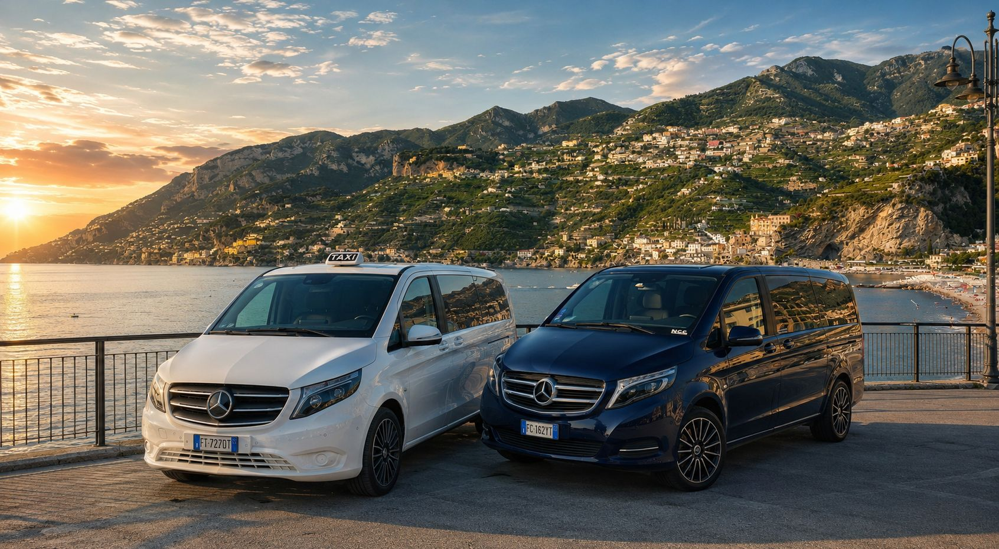
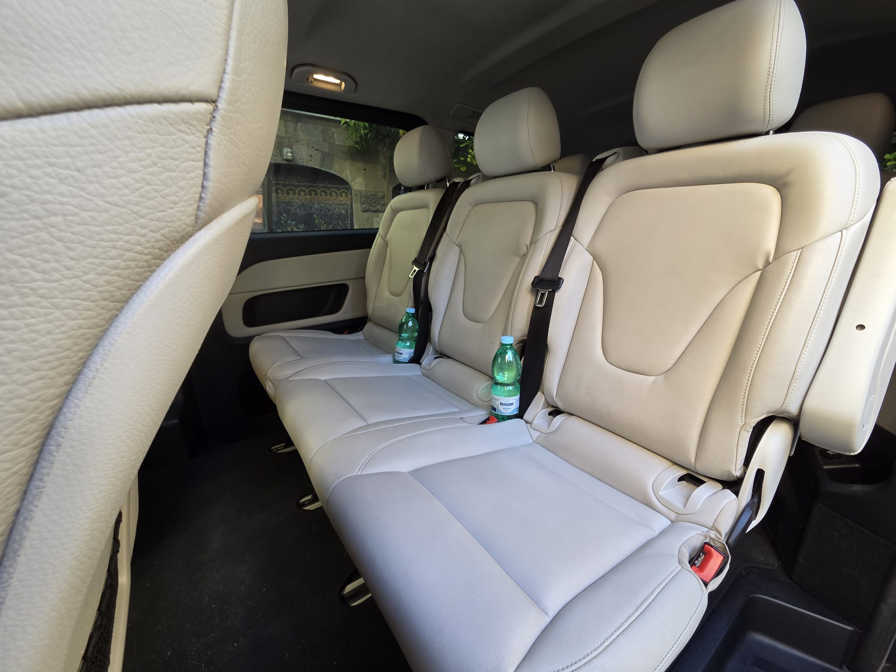
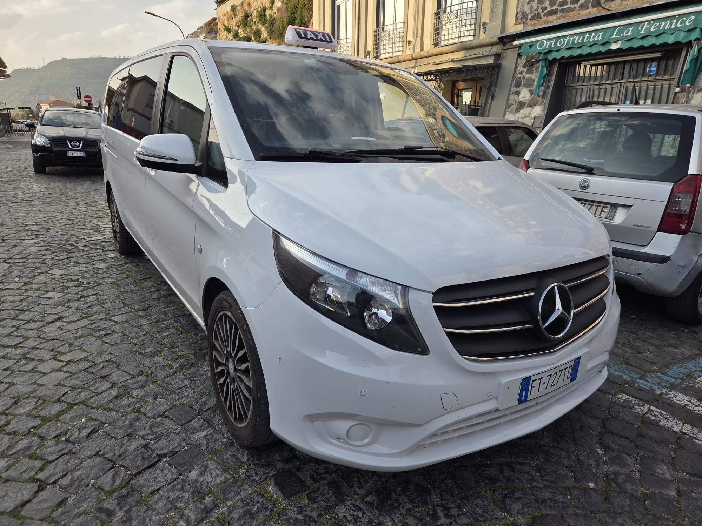
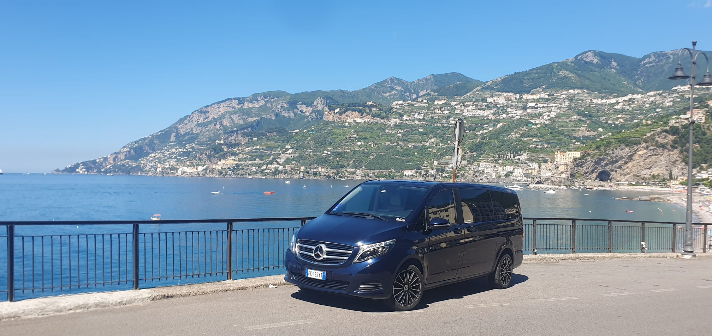
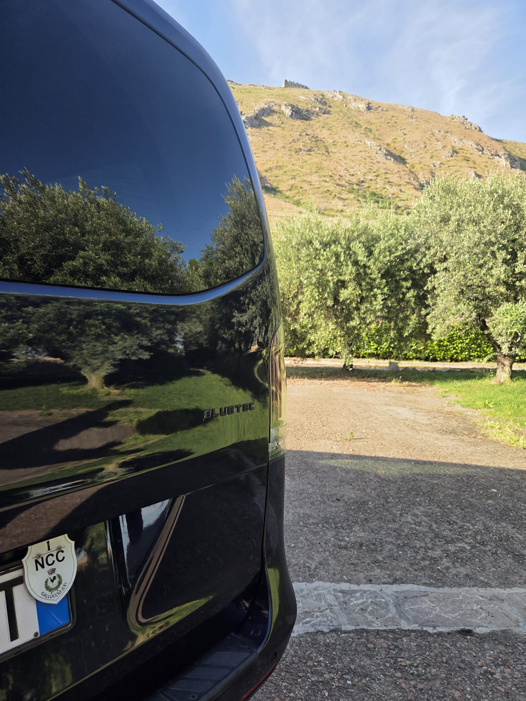
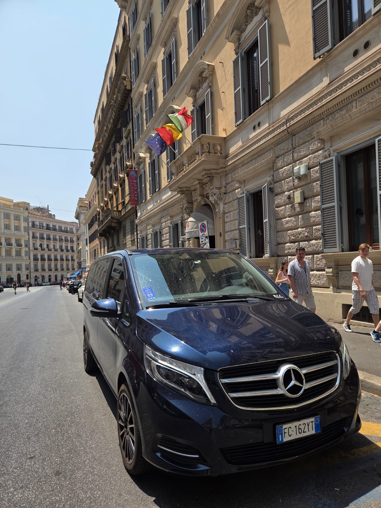
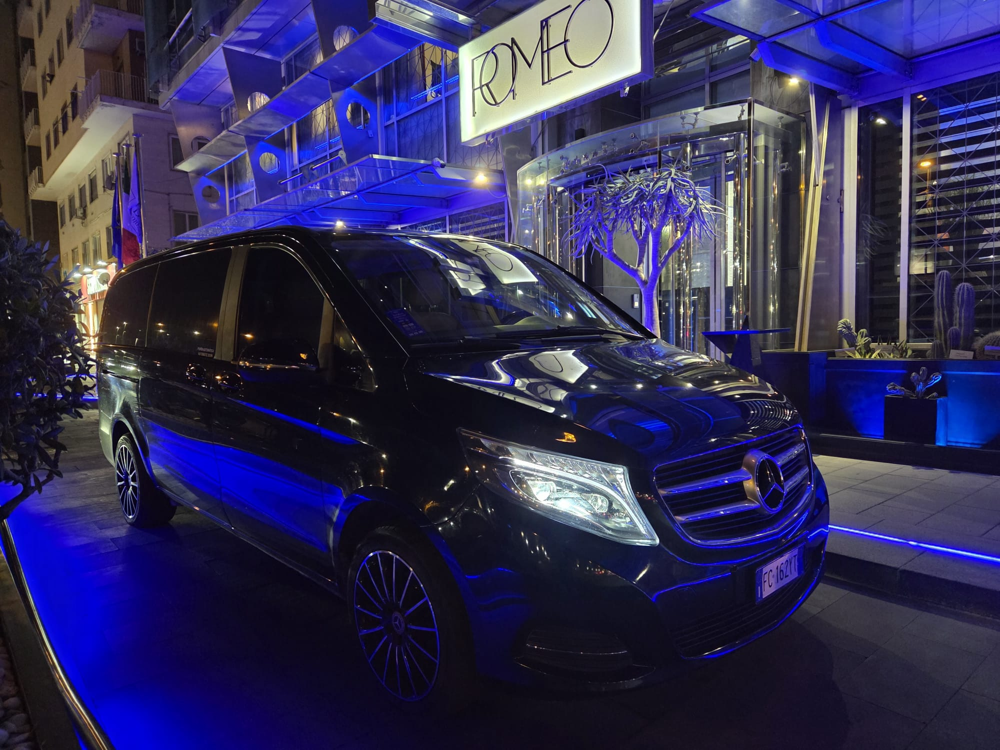
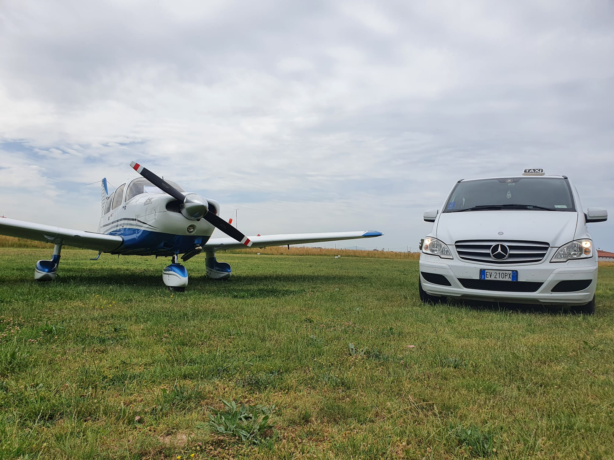

Taxi Giugliano
Taxi rapido per Giugliano, Lago Patria, area nord di Napoli e destinazioni locali.

Private Transfers & Tours
Taxi, NCC e transfer premium con autisti professionali, veicoli fino a 9 posti e assistenza reale 24/7.
Servizi
Taxi rapido per Giugliano, Lago Patria, area nord di Napoli e destinazioni locali.
Da e per Napoli Capodichino, stazioni, porti, hotel e resort in Campania.
Noleggio con conducente per business, famiglia, eventi e lunghi viaggi in Italia.
Costiera Amalfitana, Pompei, Vesuvio, Napoli, Sorrento, Capri, Ischia e Procida.
Flotta reale
Mercedes V-Class blu per transfer privati e servizi NCC, Mercedes Vito Taxi bianco per tratte locali e collegamenti rapidi. Nessun artificio: solo veicoli reali e servizio reale.



Tour privati

Amalfi, Ravello, Positano e soste panoramiche.
Storia, cultura e transfer privato senza attese.

Natura, sapori autentici e vini del territorio.

Paesaggi unici, mare e tradizione enogastronomica.

La città dopo il tramonto, tra hotel e ristoranti.
Perché sceglierci
Un contatto diretto prima, durante e dopo ogni viaggio.
Spazio reale per famiglie, piccoli gruppi, bagagli e business.
Conosciamo tempi, strade, porti, aeroporti, hotel e mete.

Prenotazioni
Scrivici su WhatsApp o chiama per Taxi Giugliano, Lago Patria, NCC Campania, Transfer Napoli Aeroporto e Tour Costiera Amalfitana.